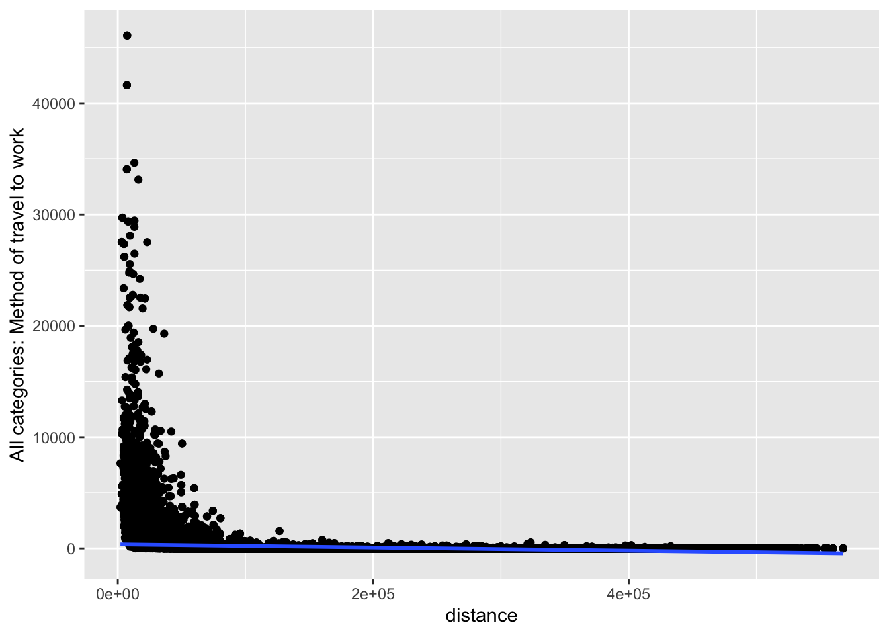
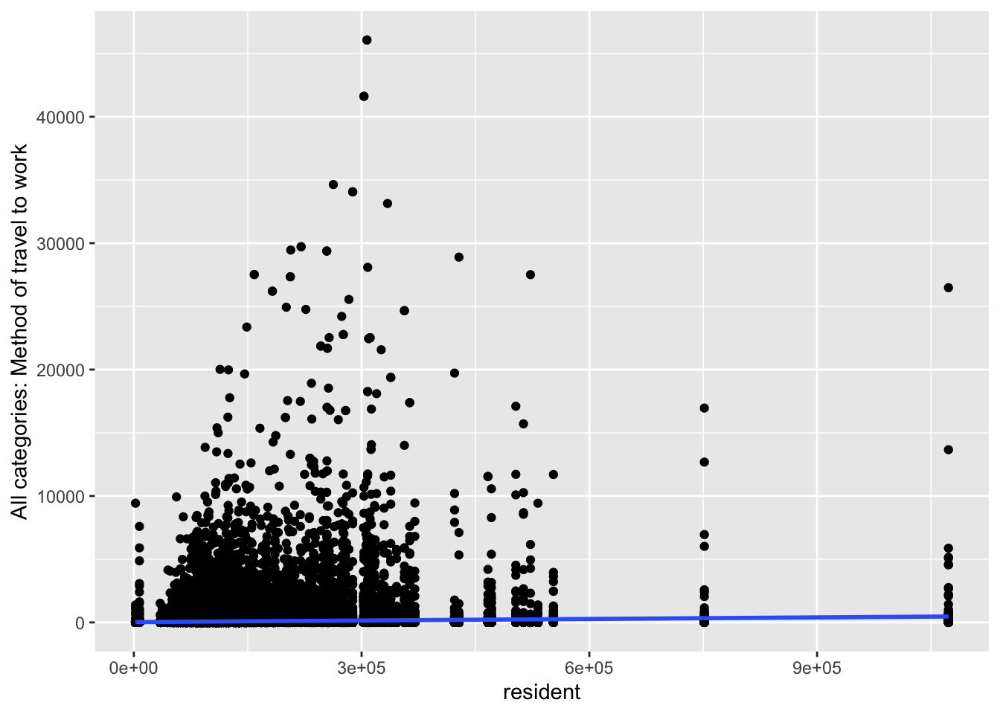
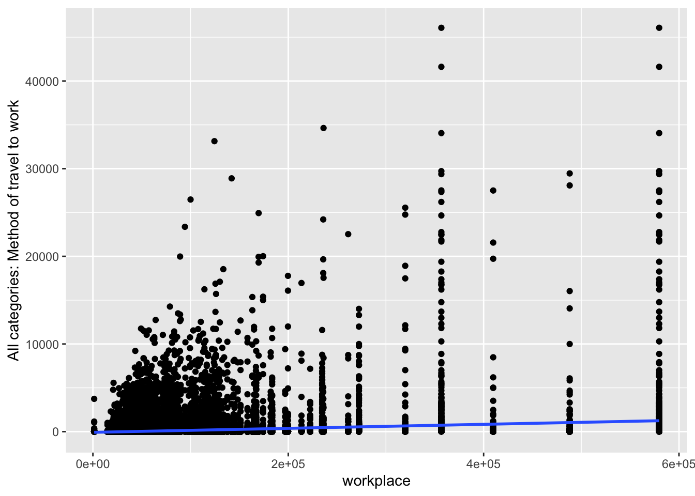
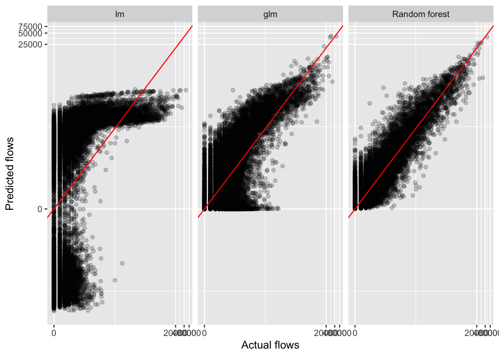
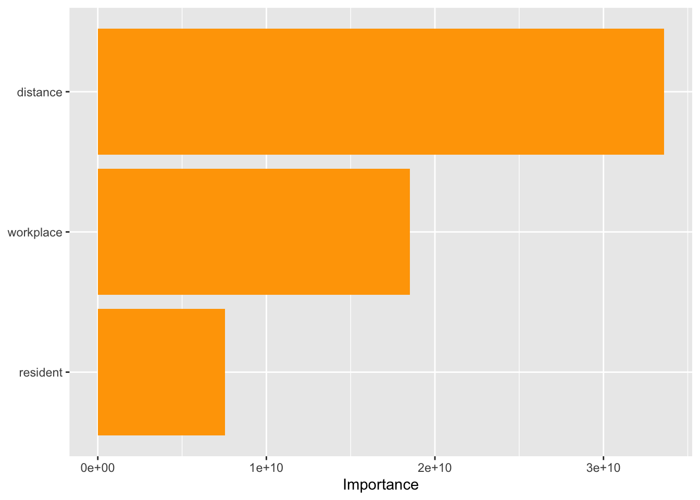

library(tidyverse)
library(geojsonio)
library(SpatialPosition)
library(stargazer)
library(rprojroot)
library(kableExtra)
library(sf)
library(caret)
knitr::opts_chunk$set(include=TRUE, message=FALSE, warning=FALSE)
# This is the project path
path <- find_rstudio_root_file()Spatial interaction modelling
Resources
Some of the materials for this tutorial have been adapted from:
the Origin-destination data with stplanr manual,
the Modelling Population Flows Using Spatial Interaction Models tutorial, and
Current research
As an introduction, see here a recent research project we did, which used a form of spatial interaction modelling to predict interregional trade flow, using web data (Tranos, Carrascal-Incera, and Willis 2022).
Commuting data and networks
This the same data and the same data preparation we did for the network analysis practical. Please follow the below workflow, which you should already be familiar with. Once the data preparation is done, we will model these commuting flows.
For this tutorial we will use travel to work data from the 2011 UK Census. The data is available online, but it requires an academic login. After you log in, download the WU03UK element, save the .csv on your working directory under a /data directory and unzip it. We will use the:
Location of usual residence and place of work by method of travel to work
for
Census Merged local authority districts in England and Wales, Council areas in Scotland, Local government districts in Northern Ireland.
The below code loads the data.
path.data <- paste0(path, "/data/wu03uk_v3/wu03uk_v3.csv")
commuting <- read_csv(path.data)
commuting# A tibble: 110,162 × 14
`Area of usual residence` `Area of workplace` All categories: Method of tra…¹
<chr> <chr> <dbl>
1 95AA 95AA 9465
2 95AA 95BB 107
3 95AA 95CC 42
4 95AA 95DD 1485
5 95AA 95EE 35
6 95AA 95FF 18
7 95AA 95GG 4538
8 95AA 95HH 139
9 95AA 95II 282
10 95AA 95JJ 108
# ℹ 110,152 more rows
# ℹ abbreviated name: ¹`All categories: Method of travel to work`
# ℹ 11 more variables: `Work mainly at or from home` <dbl>,
# `Underground, metro, light rail, tram` <dbl>, Train <dbl>,
# `Bus, minibus or coach` <dbl>, Taxi <dbl>,
# `Motorcycle, scooter or moped` <dbl>, `Driving a car or van` <dbl>,
# `Passenger in a car or van` <dbl>, Bicycle <dbl>, `On foot` <dbl>, …You might have observe some weird codes (OD0000001, OD0000002, OD0000003 and OD0000004). With some simple Google searching we can find the 2011 Census Origin-Destination Data User Guide, which indicates that these codes do not refer to local authorities:
OD0000001 = Mainly work at or from home
OD0000002 = Offshore installation
OD0000003 = No fixed place
OD0000004 = Outside UK
For the sake of simplicity we will remove these non-geographical nodes.
non.la <- c("OD0000001", "OD0000002", "OD0000003", "OD0000004")
commuting <- commuting %>%
filter(!`Area of workplace` %in% non.la)check the %in% operator.
Now let’s do some clean-up of the commuting data frame. Let’s remind ourselves how the data look like
We are keeping the English and Wales local authorities by keeping the observations with a local authority code starting from E (for England) and W (for Wales).
commuting <- commuting %>% filter(startsWith(`Area of usual residence`, "E") |
startsWith(`Area of usual residence`, "W")) %>%
filter(startsWith(`Area of workplace`, "E") |
startsWith(`Area of workplace`, "W")) %>%
glimpse()Rows: 93,034
Columns: 14
$ `Area of usual residence` <chr> "E41000001", "E41000001", "…
$ `Area of workplace` <chr> "E41000001", "E41000002", "…
$ `All categories: Method of travel to work` <dbl> 20777, 1591, 534, 3865, 433…
$ `Work mainly at or from home` <dbl> 0, 0, 0, 0, 0, 0, 0, 0, 0, …
$ `Underground, metro, light rail, tram` <dbl> 6, 1, 0, 1, 0, 0, 0, 0, 0, …
$ Train <dbl> 26, 32, 0, 49, 11, 0, 0, 0,…
$ `Bus, minibus or coach` <dbl> 1922, 140, 21, 167, 7, 0, 0…
$ Taxi <dbl> 527, 11, 4, 20, 1, 0, 0, 0,…
$ `Motorcycle, scooter or moped` <dbl> 107, 6, 6, 23, 4, 0, 0, 0, …
$ `Driving a car or van` <dbl> 11788, 1225, 448, 3144, 360…
$ `Passenger in a car or van` <dbl> 1965, 99, 36, 365, 33, 0, 0…
$ Bicycle <dbl> 593, 13, 1, 29, 2, 0, 0, 0,…
$ `On foot` <dbl> 3789, 60, 16, 60, 15, 0, 0,…
$ `Other method of travel to work` <dbl> 54, 4, 2, 7, 0, 0, 0, 0, 0,…We can also see we many rows we dropped with glimpse().
It is very important to distinguish between intra- and inter-local authority flows. In network analysis terms, these are the values we find on the diagonal of an adjacency matrix and refer to the commuting flows within a specific local authority or between different ones. For this exercise we are dropping the intra-local authority flows. Although not used here, we also create a new object with the intra-local authority flows.
commuting.intra <- commuting %>%
filter(`Area of usual residence` == `Area of workplace`)
commuting <- commuting %>%
filter(`Area of usual residence` != `Area of workplace`) %>%
glimpse()Rows: 92,688
Columns: 14
$ `Area of usual residence` <chr> "E41000001", "E41000001", "…
$ `Area of workplace` <chr> "E41000002", "E41000003", "…
$ `All categories: Method of travel to work` <dbl> 1591, 534, 3865, 433, 5, 2,…
$ `Work mainly at or from home` <dbl> 0, 0, 0, 0, 0, 0, 0, 0, 0, …
$ `Underground, metro, light rail, tram` <dbl> 1, 0, 1, 0, 0, 0, 0, 0, 0, …
$ Train <dbl> 32, 0, 49, 11, 0, 0, 0, 0, …
$ `Bus, minibus or coach` <dbl> 140, 21, 167, 7, 0, 0, 0, 1…
$ Taxi <dbl> 11, 4, 20, 1, 0, 0, 0, 0, 0…
$ `Motorcycle, scooter or moped` <dbl> 6, 6, 23, 4, 0, 0, 0, 0, 0,…
$ `Driving a car or van` <dbl> 1225, 448, 3144, 360, 5, 2,…
$ `Passenger in a car or van` <dbl> 99, 36, 365, 33, 0, 0, 0, 0…
$ Bicycle <dbl> 13, 1, 29, 2, 0, 0, 0, 0, 0…
$ `On foot` <dbl> 60, 16, 60, 15, 0, 0, 0, 0,…
$ `Other method of travel to work` <dbl> 4, 2, 7, 0, 0, 0, 0, 0, 0, …Please note the constant use of glimpse() to keep control of how many observations we have and check if we missed anything.
Also, take a note of the commuting object, which includes multiple types of commuting flows. Therefore, we will build \(3\) different networks:
one for all the commuting flows
one only for train flows
one only for bicycle flows.
commuting.all <- commuting %>%
select(`Area of usual residence`,
`Area of workplace`,
`All categories: Method of travel to work`) %>%
rename(o = `Area of usual residence`, # Area of usual residence is annoyingly
d = `Area of workplace`, # long, so I am renaiming theses columns
weight = `All categories: Method of travel to work`)
# just FYI this is how you could have achieved the same output using base R
# instead of dplyr of the tidyverse ecosystem
# commuting.all <- commuting[,1:3]
# names(commuting.all)[1] <- "o"
# names(commuting.all)[2] <- "d"
# names(commuting.all)[3] <- "weight"
commuting.train <- commuting %>%
select(`Area of usual residence`,
`Area of workplace`,
`All categories: Method of travel to work`,
`Train`) %>%
rename(o = `Area of usual residence`,
d = `Area of workplace`,
weight = `All categories: Method of travel to work`) %>%
# The below code drops all the lines with 0 train flows in order to exclude
# these edges from the network.
filter(Train!=0)
commuting.bicycle <- commuting %>%
select(`Area of usual residence`,
`Area of workplace`,
`All categories: Method of travel to work`,
`Bicycle`) %>%
rename(o = `Area of usual residence`,
d = `Area of workplace`,
weight = `All categories: Method of travel to work`) %>%
# The below code drops all the lines with 0 bicycle flows in order to exclude
# these edges from the network.
filter(Bicycle!=0)Unless you know the local authority codes by hard, it might be useful to also add the corresponding local authority names. These can be easily obtained from the ONS. The below code directly downloads a GeoJSON file with the local authorities in England and Wales. If you don’t know what a GeoJSON file is, have a look here. Boundary data can also be obtained by UK Data Service.
For the time being we are only interested in the local authority names and codes. We will use the spatial object later.
Tip: the below code downloads the GeoJSON file over the web. If you want to run the code multiple times, it might be faster to download the file ones, save it on your hard drive and the point this location to st_read().
la <-st_read("https://services1.arcgis.com/ESMARspQHYMw9BZ9/arcgis/rest/services/CMLAD_Dec_2011_SGCB_GB_2022/FeatureServer/0/query?outFields=*&where=1%3D1&f=geojson")
glimpse(la)
la.names <- as.data.frame(la) %>%
select(cmlad11cd, cmlad11nm) # all we need is the LA names and codesSpatial interaction modelling
Let’s now move to model these flows. If you remember the basic Gravity model is defined as following:
\[T_{ij} = k \displaystyle \frac{V_i^\lambda M_j^\alpha}{D_{ij}^\beta}\]
And if we take the logarithms of both sides of the equation we can transform the Gravity model to something which looks like a linear model:
\[lnT_{ij} = lnk + \lambda lnV_i + \alpha lnM_j - \beta lnD_{ij}\]
The above transformed equation can be estimated as a linear model if we assume that \(y = lnT_{ij}\), \(c = lnk\), \(x_1 = lnV_i\), \(a_1 = \lambda\) etc. Hence, we can use OLS to estimate the following:
\[lnT_{ij} = lnk + \lambda lnV_i + \alpha lnM_j - \beta lnD_{ij} + e_{ij}\]
This is what is known as the log-log transformation.
There are a number of issues with such an approach though. Most importantly, our dependent variable is not continuous, but instead a discrete, positive variable (there are no flows of -324.56 people!). Therefore we need to employ an appropriate estimator and this is what the Poisson regression does. Briefly, if we exponentiate both sides, the above equation can be written as:
\[T_{ij} = e^{lnk + \lambda lnV_i + \alpha lnM_j - \beta lnD_{ij}}\] The above is in the form of the Poisson regression. So, we are interested in modelling not the mean \(T_{ij}\) drawn from a normally distributed \(T\), but, instead, the mean \(T_{ij}\), which is the average of the all the flows (i.e. counts) between any \(i\) and \(j\). For more details about the Poisson regression have a look at Roback and Legler (2021). For this practical we will estimate the commuting flows using both OLS and Poisson regressions.
But before we get into the estimation we need to build a data frame, which includes all the necessary variables. These are the origin-destination flows \(T\) between \(i\) and \(j\), the distance \(dist\) between \(i\) and \(j\) and the characteristics \(V\) and \(M\) of origin \(i\) and destinations \(j\) that we believe push and pull individuals to commute.
# we use the `SpatialPosition` package and the `CreateDistMatrix()` function to
# calculate a distance matrix for all local authorities,
la.d <- CreateDistMatrix(la, la, longlat = T)
# we use as column and row name the local authority codes
rownames(la.d) <- la$cmlad11cd
colnames(la.d) <- la$cmlad11cd
# This is a matrix of the distances between *all* local authorities. We then use
# the function as.data.frame.table() to convert this matrix to a data frame each
# line of which represents an origin-destination pair.
la.d <- as.data.frame.table(la.d, responseName = "value")
glimpse(la.d)Rows: 119,716
Columns: 3
$ Var1 <fct> E41000001, E41000002, E41000003, E41000004, E41000005, E41000006…
$ Var2 <fct> E41000001, E41000001, E41000001, E41000001, E41000001, E41000001…
$ value <dbl> 0.00, 14338.99, 20147.01, 12892.19, 23203.28, 175341.09, 164899.…# Please note that the elements of the diagonal are present in this distance matrix.If you want to check that the distances we are correct, use Google maps to calculate the distance between E41000001 (Middlesbrough) and E41000002 (Hartlepool). Remember that the la.d is expressed in meters.
What is missing here? Do you remember the intra-zone commuting flows? E.g. the commuters that live and work in Bristol? We had removed these from the network analysis and visualisation element. Because we don’t have information about the distances of the intra-zone commutes, we will exclude them from this analysis.
la.d <- la.d %>%
filter(Var1 != Var2) %>%
glimpse()Rows: 119,370
Columns: 3
$ Var1 <fct> E41000002, E41000003, E41000004, E41000005, E41000006, E41000007…
$ Var2 <fct> E41000001, E41000001, E41000001, E41000001, E41000001, E41000001…
$ value <dbl> 14338.99, 20147.01, 12892.19, 23203.28, 175341.09, 164899.50, 13…What we want to do is to match the data frame with all the distances with the commuting flows data frame. To do that we will (1) create a new data frame for the origin-destination pair and (2) match the two data frames.
la.d <- la.d %>%
mutate(ij.code = paste(Var1, Var2, sep = "_")) %>%
glimpse()Rows: 119,370
Columns: 4
$ Var1 <fct> E41000002, E41000003, E41000004, E41000005, E41000006, E410000…
$ Var2 <fct> E41000001, E41000001, E41000001, E41000001, E41000001, E410000…
$ value <dbl> 14338.99, 20147.01, 12892.19, 23203.28, 175341.09, 164899.50, …
$ ij.code <chr> "E41000002_E41000001", "E41000003_E41000001", "E41000004_E4100…commuting <- commuting %>%
mutate(ij.code = paste(`Area of usual residence`,
`Area of workplace`,
sep = "_")) %>%
glimpse()Rows: 92,688
Columns: 15
$ `Area of usual residence` <chr> "E41000001", "E41000001", "…
$ `Area of workplace` <chr> "E41000002", "E41000003", "…
$ `All categories: Method of travel to work` <dbl> 1591, 534, 3865, 433, 5, 2,…
$ `Work mainly at or from home` <dbl> 0, 0, 0, 0, 0, 0, 0, 0, 0, …
$ `Underground, metro, light rail, tram` <dbl> 1, 0, 1, 0, 0, 0, 0, 0, 0, …
$ Train <dbl> 32, 0, 49, 11, 0, 0, 0, 0, …
$ `Bus, minibus or coach` <dbl> 140, 21, 167, 7, 0, 0, 0, 1…
$ Taxi <dbl> 11, 4, 20, 1, 0, 0, 0, 0, 0…
$ `Motorcycle, scooter or moped` <dbl> 6, 6, 23, 4, 0, 0, 0, 0, 0,…
$ `Driving a car or van` <dbl> 1225, 448, 3144, 360, 5, 2,…
$ `Passenger in a car or van` <dbl> 99, 36, 365, 33, 0, 0, 0, 0…
$ Bicycle <dbl> 13, 1, 29, 2, 0, 0, 0, 0, 0…
$ `On foot` <dbl> 60, 16, 60, 15, 0, 0, 0, 0,…
$ `Other method of travel to work` <dbl> 4, 2, 7, 0, 0, 0, 0, 0, 0, …
$ ij.code <chr> "E41000001_E41000002", "E41…Before we perform the match, keep a note of how many observations both data frames have in order to check if we loose any observations during the matching. As you can see the commuting data frame has less observations than the la.d one, which includes all the possible origin-destination pairs.
What does it mean? That for some origin-destination pairs there are no commuting flows, which of course makes sense. We need to include these pairs with \(flow = 0\) in our data though because the lack of commuting flows is not missing data!
commuting.si <- full_join(la.d, commuting, by = "ij.code") %>%
glimpse()Rows: 119,370
Columns: 18
$ Var1 <fct> E41000002, E41000003, E4100…
$ Var2 <fct> E41000001, E41000001, E4100…
$ value <dbl> 14338.99, 20147.01, 12892.1…
$ ij.code <chr> "E41000002_E41000001", "E41…
$ `Area of usual residence` <chr> "E41000002", "E41000003", "…
$ `Area of workplace` <chr> "E41000001", "E41000001", "…
$ `All categories: Method of travel to work` <dbl> 990, 558, 2590, 266, 1, 4, …
$ `Work mainly at or from home` <dbl> 0, 0, 0, 0, 0, 0, 0, NA, 0,…
$ `Underground, metro, light rail, tram` <dbl> 0, 1, 0, 0, 0, 0, 0, NA, 0,…
$ Train <dbl> 6, 3, 25, 2, 0, 0, 0, NA, 1…
$ `Bus, minibus or coach` <dbl> 58, 8, 87, 6, 0, 0, 0, NA, …
$ Taxi <dbl> 1, 2, 4, 0, 0, 0, 0, NA, 0,…
$ `Motorcycle, scooter or moped` <dbl> 2, 1, 12, 0, 0, 0, 0, NA, 0…
$ `Driving a car or van` <dbl> 783, 499, 2259, 244, 1, 4, …
$ `Passenger in a car or van` <dbl> 73, 26, 154, 10, 0, 0, 0, N…
$ Bicycle <dbl> 15, 9, 23, 0, 0, 0, 0, NA, …
$ `On foot` <dbl> 52, 8, 24, 4, 0, 0, 0, NA, …
$ `Other method of travel to work` <dbl> 0, 1, 2, 0, 0, 0, 0, NA, 0,…# Some variables are repetitive or need name change
commuting.si <- commuting.si %>%
rename(i = Var1,
j = Var2,
distance = value) %>%
select(-`Area of usual residence`,
-`Area of workplace`) %>%
glimpse()Rows: 119,370
Columns: 16
$ i <fct> E41000002, E41000003, E4100…
$ j <fct> E41000001, E41000001, E4100…
$ distance <dbl> 14338.99, 20147.01, 12892.1…
$ ij.code <chr> "E41000002_E41000001", "E41…
$ `All categories: Method of travel to work` <dbl> 990, 558, 2590, 266, 1, 4, …
$ `Work mainly at or from home` <dbl> 0, 0, 0, 0, 0, 0, 0, NA, 0,…
$ `Underground, metro, light rail, tram` <dbl> 0, 1, 0, 0, 0, 0, 0, NA, 0,…
$ Train <dbl> 6, 3, 25, 2, 0, 0, 0, NA, 1…
$ `Bus, minibus or coach` <dbl> 58, 8, 87, 6, 0, 0, 0, NA, …
$ Taxi <dbl> 1, 2, 4, 0, 0, 0, 0, NA, 0,…
$ `Motorcycle, scooter or moped` <dbl> 2, 1, 12, 0, 0, 0, 0, NA, 0…
$ `Driving a car or van` <dbl> 783, 499, 2259, 244, 1, 4, …
$ `Passenger in a car or van` <dbl> 73, 26, 154, 10, 0, 0, 0, N…
$ Bicycle <dbl> 15, 9, 23, 0, 0, 0, 0, NA, …
$ `On foot` <dbl> 52, 8, 24, 4, 0, 0, 0, NA, …
$ `Other method of travel to work` <dbl> 0, 1, 2, 0, 0, 0, 0, NA, 0,…# Let's see if we have any missing values
sapply(commuting.si, function(x) sum(is.na(x))) i
0
j
0
distance
0
ij.code
0
All categories: Method of travel to work
26682
Work mainly at or from home
26682
Underground, metro, light rail, tram
26682
Train
26682
Bus, minibus or coach
26682
Taxi
26682
Motorcycle, scooter or moped
26682
Driving a car or van
26682
Passenger in a car or van
26682
Bicycle
26682
On foot
26682
Other method of travel to work
26682 There are quite a few. What does it mean? That there are no commuting flows for these origin-destination pairs and,therefore, were excluded from the origin commuting data set we downloaded. So, we are going to replace these \(NAs\) with \(0s\).
commuting.si <- commuting.si %>%
replace(., is.na(.), 0)Now let’s bring data for some \(i\) and \(j\) characteristics that we believe that affect commuting. I have prepared such a small data set from the census, which includes resident population and working populations as push and pull variables. These data have been obtained by nomis.
As you can see, there are two columns with LA codes: la.code.st and Merging.Local.Authority.Code. Because Local Authority codes and definitions change overtime, I had to do some pre-processing. We will use the Merging.Local.Authority.Code to merge with our flow data, but there are 6 Local Authorities that I couldn’t much. Later down the pipeline, I will drop these cases.
# To avoid issues with read_csv() reading directly from Dropbox, we use a
# tempfile trick. First, an empty temp file is created with tempfile(). Then, we
# use download.file() to download the Dropbox file to this temp file. Finally,
# we read the temp file using read_csv().
temp <- tempfile(fileext = ".csv")
download.file(
"https://www.dropbox.com/s/0ym88p8quwaiyau/data_workplace.csv?dl=1",
destfile = temp,
mode = "wb"
)
data.workplace <- readr::read_csv(temp)
# Alternatively, you could read directly from Dropbox using read_csv()
#data.workplace <- read_csv("https://www.dropbox.com/s/0ym88p8quwaiyau/data_workplace.csv?dl=1")
# Important Dropbox trick: to use the link that Dropbox provides to share a
# file in an .Rmd replace dl=0 with dl=1 at the end of the link.
temp <- tempfile(fileext = ".csv")
download.file(
"https://www.dropbox.com/s/09d7v5cm6ov3ioz/data_resident.csv?dl=1",
destfile = temp,
mode = "wb"
)
data.resident <- readr::read_csv(temp)
# Alternatively, you could read directly from Dropbox using read_csv()
#data.resident <- read_csv("https://www.dropbox.com/s/09d7v5cm6ov3ioz/data_resident.csv?dl=1")
commuting.si <- commuting.si %>%
left_join(data.resident, by = c('i' = 'Merging.Local.Authority.Code')) %>%
left_join(data.workplace, by = c('j' = 'Merging.Local.Authority.Code')) Question are there any redundant columns? Can you remove them?
Before we start modelling these flows, let’s plot our variables.
ggplot(commuting.si, aes(x=distance,
y=`All categories: Method of travel to work`)) +
geom_point() +
geom_smooth(method=lm)
ggplot(commuting.si, aes(x=resident,
y=`All categories: Method of travel to work`)) +
geom_point() +
geom_smooth(method=lm)
ggplot(commuting.si, aes(x=workplace,
y=`All categories: Method of travel to work`)) +
geom_point() +
geom_smooth(method=lm)
Question What do you take from these graphs?
Let’s try now to model these flows. We will start with a simple OLS to estimate the above specifications. Please pay attention to the small trick we did. Because there are non-materialised origin-destination pairs (i.e. with 0 flows), we added a small value (\(0.5\)) in the dependent variable. Otherwise we will receive an error as the logarithm of \(0\) is not defined.
ols.model <- lm(log(`All categories: Method of travel to work`+.5) ~
log(distance) + log(resident) + log(workplace),
data = commuting.si)
# To see the model output you can use the summary() function.
summary(ols.model)
Call:
lm(formula = log(`All categories: Method of travel to work` +
0.5) ~ log(distance) + log(resident) + log(workplace), data = commuting.si)
Residuals:
Min 1Q Median 3Q Max
-4.2614 -0.7144 -0.0429 0.6430 8.6140
Coefficients:
Estimate Std. Error t value Pr(>|t|)
(Intercept) 7.967357 0.106119 75.08 <2e-16 ***
log(distance) -1.839401 0.004610 -399.01 <2e-16 ***
log(resident) 0.514034 0.005402 95.16 <2e-16 ***
log(workplace) 0.852322 0.005185 164.37 <2e-16 ***
---
Signif. codes: 0 '***' 0.001 '**' 0.01 '*' 0.05 '.' 0.1 ' ' 1
Residual standard error: 1.104 on 115932 degrees of freedom
(4816 observations deleted due to missingness)
Multiple R-squared: 0.6444, Adjusted R-squared: 0.6444
F-statistic: 7.002e+04 on 3 and 115932 DF, p-value: < 2.2e-16So, the OLS regression estimated the four parameters:
- \(lnk = 7.968\)
- \(\beta = -1.840\)
- \(\lambda = 0.514\)
- \(\alpha = -0.852\)
Let’s estimate now our model using a Poisson regression. Given that we don’t take the logarithm of the dependent variable, there is no need to add \(0.5\).
glm.model <- glm((`All categories: Method of travel to work`)~
log(distance) + log(resident) + log(workplace),
family = poisson(link = "log"), data = commuting.si)
summary(glm.model)
Call:
glm(formula = (`All categories: Method of travel to work`) ~
log(distance) + log(resident) + log(workplace), family = poisson(link = "log"),
data = commuting.si)
Coefficients:
Estimate Std. Error z value Pr(>|z|)
(Intercept) 11.6641641 0.0091381 1276 <2e-16 ***
log(distance) -1.8164748 0.0002803 -6480 <2e-16 ***
log(resident) 0.3179209 0.0005444 584 <2e-16 ***
log(workplace) 0.8191649 0.0004200 1951 <2e-16 ***
---
Signif. codes: 0 '***' 0.001 '**' 0.01 '*' 0.05 '.' 0.1 ' ' 1
(Dispersion parameter for poisson family taken to be 1)
Null deviance: 71855219 on 115935 degrees of freedom
Residual deviance: 14104694 on 115932 degrees of freedom
(4816 observations deleted due to missingness)
AIC: 14447299
Number of Fisher Scoring iterations: 6The following parameter1 have been estimated
- \(lnk = 11.664\)
- \(\beta = -1.816\)
- \(\lambda = 0.318\)
- \(\alpha = 0.820\)
As you can see the differences are rather small.
The stargazer package I use below creates elegant regression tables. Replace type = "html" with type = "text" to have be able to read the results using the .Rmd document. the “html” option is useful for when knitting the script to an .html document.
stargazer(ols.model, glm.model, type = "html")| Dependent variable: | ||
log(All categories: Method of travel to work + 0.5)
|
(All categories: Method of travel to work)
|
|
| OLS | Poisson | |
| (1) | (2) | |
| log(distance) | -1.839*** | -1.816*** |
| (0.005) | (0.0003) | |
| log(resident) | 0.514*** | 0.318*** |
| (0.005) | (0.001) | |
| log(workplace) | 0.852*** | 0.819*** |
| (0.005) | (0.0004) | |
| Constant | 7.967*** | 11.664*** |
| (0.106) | (0.009) | |
| Observations | 115,936 | 115,936 |
| R2 | 0.644 | |
| Adjusted R2 | 0.644 | |
| Log Likelihood | -7,223,645.000 | |
| Akaike Inf. Crit. | 14,447,299.000 | |
| Residual Std. Error | 1.104 (df = 115932) | |
| F Statistic | 70,016.600*** (df = 3; 115932) | |
| Note: | p<0.1; p<0.05; p<0.01 | |
Question Can you interpret the regression results?
Constrained spatial interaction models
The Poisson (and the OLS) model we just estimated is an unconstrained spatial interaction model. Nothing forces the predicted flows to be consistent with what we already know about the system. For example, if we sum the predicted flows for all the commuters who live in Bristol, there is no guarantee that we will get the actual number of Bristol residents who commute to another local authority.
But very often we do know these totals. The census tells us how many people live in each local authority and commute elsewhere (\(O_i\), the origin totals) and how many jobs are taken by commuters in each local authority (\(D_j\), the destination totals). What we do not know, or what we want to predict, is how these totals are distributed, i.e. who commutes where. This is what constrained spatial interaction models do (Wilson 1971). There are four types:
| Type | What is fixed | \(\sum_j T_{ij}\) | \(\sum_i T_{ij}\) |
|---|---|---|---|
| Unconstrained | nothing | free | free |
| Production-constrained | origin totals, \(O_i\) | \(= O_i\) | free |
| Attraction-constrained | destination totals, \(D_j\) | free | \(= D_j\) |
| Doubly constrained | both | \(= O_i\) | \(= D_j\) |
In this section we will estimate the production-constrained and the doubly constrained models for the same commuting flows and compare them with the unconstrained one we estimated above. The attraction-constrained model is the mirror image of the production-constrained one and you will estimate it as a task at the end.
Production-constrained model
The production-constrained model is defined as:
\[T_{ij} = A_i \, O_i \, M_j^\alpha \, D_{ij}^{-\beta} \qquad \text{where} \qquad A_i = \frac{1}{\sum_j M_j^\alpha D_{ij}^{-\beta}}\]
Compare it with the unconstrained model. The origin characteristic \(V_i^\lambda\) has been replaced by the known origin total \(O_i\) and the new term \(A_i\) is a balancing factor, which makes sure that the predicted flows from each origin add up to \(O_i\), i.e. \(\sum_j T_{ij} = O_i\). Please note that we do not estimate \(\lambda\) any more. We still estimate \(\alpha\) and \(\beta\).
An important by-product: \(1/A_i = \sum_j M_j^\alpha D_{ij}^{-\beta}\) is the gravity-based accessibility of origin \(i\) (do you remember the accessibility indicators from the lecture?). We will come back to this below.
Preparing the data
Good news: we do not need to change the format of the data. We keep working with the long format, in which each line is an origin-destination pair, and we estimate the constrained models with a Poisson regression, as we did above. The below code prepares a data frame for this. Pay attention to the comments.
# This package allows us to estimate generalised linear models with a sparse
# matrix of dummy variables. See below why we need it. If you do not have it, run
# install.packages("MatrixModels")
library(MatrixModels)
# First, we keep only the English and Welsh local authorities, as we do not have
# commuting flows for Scotland and Northern Ireland, and we simplify the data
# frame. Note the as.character(), because i and j might be factors.
commuting.c <- commuting.si %>%
mutate(i = as.character(i),
j = as.character(j)) %>%
filter(str_detect(i, "^[EW]"), str_detect(j, "^[EW]")) %>%
rename(flow = `All categories: Method of travel to work`) %>%
select(i, j, flow, distance, resident, workplace)
# Do we have any missing values? We want this to be 0, but we have quite a few.
sum(is.na(commuting.c))[1] 4858# Which variables are they in? These are the resident and workplace populations,
# which come from the census data we joined above.
colSums(is.na(commuting.c)) i j flow distance resident workplace
0 0 0 0 2429 2429 # Which local authorities do not have such data? An origin without resident
# population or a destination without workplace population.
missing.la <- unique(c(commuting.c$i[is.na(commuting.c$resident)],
commuting.c$j[is.na(commuting.c$workplace)]))
la.names %>% filter(cmlad11cd %in% missing.la) cmlad11cd cmlad11nm
1 E41000005 Darlington
2 E41000048 Northumberland
3 E41000129 East Hertfordshire
4 E41000132 St Albans
5 E41000133 Stevenage
6 E41000136 Welwyn Hatfield
7 E41000276 Gateshead# For the constrained models we need a *complete* set of origins and destinations,
# otherwise the totals O and D would not be consistent. So, we remove all the
# pairs which involve these local authorities, either as origins or as destinations.
commuting.c <- commuting.c %>%
filter(!i %in% missing.la, !j %in% missing.la)
# Now we should be fine.
sum(is.na(commuting.c))[1] 0# The local authority codes. We turn the origin (i) and the destination (j) into
# factors with the same levels, as glm() will create one dummy variable for each level.
codes <- sort(unique(c(commuting.c$i, commuting.c$j)))
commuting.c <- commuting.c %>%
mutate(i = factor(i, levels = codes),
j = factor(j, levels = codes))
length(codes) # number of local authorities[1] 339nrow(commuting.c) # number of origin-destination pairs[1] 115936# The known totals. O: commuters by origin, D: commuters by destination. Please note
# that they only include commuters who work in a *different* local authority, as
# there are no intra-zonal flows in our data.
O <- tapply(commuting.c$flow, commuting.c$i, sum)
D <- tapply(commuting.c$flow, commuting.c$j, sum)
# A good sanity check: the total of the origins must be equal to the total of
# the destinations.
c(sum(O), sum(D))[1] 10873062 10873062Estimating the production-constrained model
How do we estimate \(\alpha\) and \(\beta\) when the balancing factor \(A_i\) is part of the model? Remember that the unconstrained model is, after taking logarithms, a linear model:
\[\ln T_{ij} = \ln A_i + \ln O_i + \alpha \ln M_j - \beta \ln D_{ij}\]
Here, \(\ln A_i + \ln O_i\) is a different constant for each origin. Therefore, we can estimate the model with the Poisson regression we already know, by simply adding a dummy variable for each origin, which will absorb this term. This is why this model is also known as a Poisson model with origin fixed effects. A nice property of the Poisson regression is that, when it includes such dummies, the predicted flows of each origin add up exactly to the observed ones. In other words, the constraint is satisfied by construction.
Please note that the 0 + in the formula removes the common intercept, so that we get one dummy for each origin.
We have around \(350\) origins and more than \(100,000\) origin-destination pairs. A model matrix with a dummy variable for each origin is huge, but it is almost all zeros. The base glm() function stores all these zeros and, as a result, it is very slow for this kind of models (it can take many minutes). The function glm4() of the MatrixModels package has almost exactly the same syntax, but with the argument sparse = TRUE it stores only the non-zero values. It estimates the same model in about a second. The TOL argument is the convergence tolerance, which we make stricter than the default so that the constraints are satisfied with high precision.
prod.glm <- glm4(flow ~ 0 + i + log(workplace) + log(distance),
family = poisson(link = "log"), data = commuting.c,
sparse = TRUE, control = list(TOL = 1e-7))
# We do not want to print the coefficients of all the origin dummies.
# The last two coefficients are alpha (workplace) and minus beta (distance).
tail(coef(prod.glm), 2)log(workplace) log(distance)
1.226157 -2.577761 Check that the model does what it promises. The predicted flows from each origin should add up to \(O_i\), while there is no such guarantee for the destinations.
# The largest difference between predicted and observed origin totals.
max(abs(tapply(fitted(prod.glm), commuting.c$i, sum) - O))[1] 0.03908384# And the same for the destination totals.
max(abs(tapply(fitted(prod.glm), commuting.c$j, sum) - D))[1] 684455.1If you are familiar with discrete choice models, this is the same as a multinomial logit model of the choice of destination for the commuters of each origin.
Question Compare the estimates of () and () with the ones from the Poisson regression above. Are they similar? Why do you think that this is (or is not) the case?
Doubly constrained model
If we know both the origin and the destination totals, we can use both:
\[T_{ij} = A_i \, B_j \, O_i \, D_j \, D_{ij}^{-\beta}\]
\[A_i = \frac{1}{\sum_j B_j D_j D_{ij}^{-\beta}} \qquad B_j = \frac{1}{\sum_i A_i O_i D_{ij}^{-\beta}}\]
Now all the flows are shaped by the totals and the only parameter left to estimate is \(\beta\), the friction of distance. Note that \(A_i\) depends on \(B_j\) and vice versa. We cannot solve them directly, but we can solve them iteratively: start with \(B_j = 1\), calculate \(A_i\), use it to update \(B_j\), and so on, until they stop changing. This is known as the Furness (or iterative proportional fitting) procedure, which was the traditional way of calibrating these models.
The Poisson regression gives us the same result in one go. This time we add a dummy variable for each origin and for each destination. Then, \(\ln(A_i O_i)\) is absorbed by the origin dummies and \(\ln(B_j D_j)\) by the destination dummies, and the only coefficient left is the one of distance, i.e. \(-\beta\). As the origin dummies already play the role of a constant, R drops the dummy of the first destination, which becomes the reference category. This is not a problem, as the predicted flows are not affected.
This is a big model, with around \(700\) dummies. With the base glm() it would take a very long time, but with the sparse matrices of glm4() it is again a matter of seconds.
dbl.glm <- glm4(flow ~ 0 + i + j + log(distance),
family = poisson(link = "log"), data = commuting.c,
sparse = TRUE, control = list(TOL = 1e-7))
# The estimate for the distance. The coefficient is minus beta.
coef(dbl.glm)["log(distance)"]log(distance)
-2.712872 And the same check as before. This time both the origin and the destination totals should be reproduced.
max(abs(tapply(fitted(dbl.glm), commuting.c$i, sum) - O))[1] 1.085074e-06max(abs(tapply(fitted(dbl.glm), commuting.c$j, sum) - D))[1] 7.161621e-06Question What is the difference between the estimate of () in the production-constrained and in the doubly constrained model? Why do you think that this is the case? (Hint: in which model does the distance have to do all the work of explaining how flows are distributed, and in which is it helped by the destination dummies?)
Comparing the models
Let’s now compare the three models. For the unconstrained model we use the Poisson model we estimated earlier. We use three goodness-of-fit measures: the root mean squared error (RMSE), the \(R^2\) (here the squared correlation between observed and predicted flows) and the Sørensen index (also known as the Common Part of Commuters, CPC), which is very popular in the flow literature. It is the proportion of commuters who are correctly allocated to their origin-destination pair. It ranges between \(0\) (nothing in common) and \(1\) (perfect). For more information about the CPC, have a look at Thompson et al. (2019).
\[CPC = \frac{2\sum_{ij} \min(T_{ij}, \hat{T}_{ij})}{\sum_{ij} T_{ij} + \sum_{ij} \hat{T}_{ij}}\]
# Predictions of the unconstrained model for the same origin-destination pairs
T.unc <- predict(glm.model, newdata = commuting.c, type = "response")
# A function which takes a vector of predicted flows and returns the fit statistics
# and the largest errors in the origin and destination totals.
evaluate <- function(pred) {
obs <- commuting.c$flow
tibble(RMSE = sqrt(mean((obs - pred)^2)),
R2 = cor(obs, pred)^2,
CPC = 2 * sum(pmin(obs, pred)) / (sum(obs) + sum(pred)),
origin.error = max(abs(tapply(pred, commuting.c$i, sum) - O)), # largest error in origin totals
destination.error = max(abs(tapply(pred, commuting.c$j, sum) - D))) # largest error in destination totals
}
models <- list("Unconstrained" = T.unc,
"Production-constrained" = fitted(prod.glm),
"Doubly constrained" = fitted(dbl.glm))
map_dfr(models, evaluate, .id = "Model") %>%
kable(digits = 3, caption = "Comparison of the spatial interaction models")| Model | RMSE | R2 | CPC | origin.error | destination.error |
|---|---|---|---|---|---|
| Unconstrained | 828.064 | 0.370 | 0.561 | 332077.380 | 377966.9 |
| Production-constrained | 438.903 | 0.736 | 0.719 | 0.039 | 684455.1 |
| Doubly constrained | 288.889 | 0.889 | 0.788 | 0.000 | 0.0 |
Question Which model fits the data better? Is this surprising? Please note that the constrained models use information from the observed flows (the totals), while the unconstrained one doesn’t. What does this mean for the comparison? In which cases would it be fair to compare the models like this and in which cases not?
Also, have a look at the last two columns. What do they tell us?
Tasks
-
Estimate the attraction-constrained model, (T_{ij} = B_j D_j V_i^ D_{ij}^{-}). Hint: it is the mirror image of the production-constrained one. You need dummies for the destinations (
j) instead of the origins and the resident populationresidentinstead ofworkplace. Which parameters do you estimate? Check that the destination totals are reproduced. -
So far we used a power function for the distance decay: (D_{ij}^{-}). Another common choice is the exponential function: (e^{- D_{ij}}). In the Poisson regression this means that you use
distancein kilometres instead oflog(distance). Estimate the production-constrained model with this specification. Which one fits the data better? (Hint: you can use theevaluate()function from above.) -
(Advanced) Distance is a crude measure of the cost of commuting. Replace the
distancevariable with public transport travel times between the local authorities. You can calculate such a matrix with ther5rpackage, which needs OpenStreetMap and public transport (GTFS) data. Does the fit improve?
This is not a Machine Learning introduction…
… but maybe a sneak preview of the philosophy behind modern data science approaches to answer computational problems. We are using the caret package to:
split our data into a training and a test data set
train three different models using only the training data set: a linear regression (
lm), the Poisson regression (glm) we are already familiar with, and a random forestuse the estimated models to make out-of-sample predictions using the test data set, i.e. data that the models have never seen
compare the predictions with the actual flows and choose the best model.
This is obviously an oversimplification, but it provides a good preview of machine learning frameworks. The key idea is that we do not judge a model by how well it fits the data we used to estimate it, but by how well it predicts new data.
It is worth browsing the caret package.
The random forest is the only real machine learning model here. It is an ensemble of many decision trees. Each tree splits the data repeatedly using the explanatory variables (e.g. is the distance smaller than x km?) and the final prediction is the average across the trees. Unlike the regressions, we do not tell it what the relationship looks like. It can find non-linear relationships and interactions between variables on its own. We use the ranger package, which is a fast implementation of random forests, through caret. If you do not have it, run install.packages("ranger").
First, we split the data. We keep \(80\%\) of the observations for training and \(20\%\) for testing. Please note that we do not change commuting.si. Instead, we create a new data frame without missing values and with a shorter name for the number of commuters. The set.seed() makes the random split reproducible.
commuting.ml <- commuting.si %>%
drop_na() %>%
rename(flow = `All categories: Method of travel to work`)
set.seed(3456)
trainIndex <- createDataPartition(commuting.ml$flow, p = .8,
list = FALSE,
times = 1)
commuting.train <- commuting.ml[ trainIndex, ]
commuting.test <- commuting.ml[-trainIndex, ]
# How many observations in each?
nrow(commuting.train)[1] 92751nrow(commuting.test)[1] 23185Now we train the models. Please pay attention to the data argument: we use the training data. caret can also do a lot of tuning and resampling, which we skip here with trainControl(method = "none") to keep this quick. The random forest has a couple of settings (mtry, min.node.size), which we fix at reasonable values instead of tuning them. This chunk will take about a minute, mostly because of the random forest.
# No resampling or tuning: each model is estimated once
ctrl <- trainControl(method = "none")
model.lm <- train(flow ~ distance + resident + workplace,
data = commuting.train,
method = "lm",
trControl = ctrl)
model.glm <- train(flow ~ distance + resident + workplace,
data = commuting.train,
method = "glm",
family = poisson(link = "log"),
trControl = ctrl)
# The random forest has a random element, so we need a seed
set.seed(3456)
model.rf <- train(flow ~ distance + resident + workplace,
data = commuting.train,
method = "ranger",
trControl = ctrl,
tuneGrid = data.frame(mtry = 2, # variables tried at each split
splitrule = "variance",
min.node.size = 5), # minimum size of the final nodes
num.trees = 200, # number of trees
importance = "impurity") # we need this to see which variables matterThen, we use the estimated models to predict the flows for the test data set. We evaluate them with four metrics: the RMSE and the MAE, which are errors measured in commuters (the lower the better); \(R^2\), here the squared correlation between observed and predicted flows; and the Sørensen index (CPC) we used above. We use a function, because we will need these metrics more than once. Please note that the linear regression can predict negative flows, which we set to \(0\) for the CPC.
# A function which takes the observed and the predicted flows and calculates
# the metrics
ml_metrics <- function(obs, pred) {
tibble(RMSE = sqrt(mean((obs - pred)^2)),
MAE = mean(abs(obs - pred)),
Rsquared = cor(obs, pred)^2,
CPC = 2 * sum(pmin(obs, pmax(pred, 0))) / (sum(obs) + sum(pmax(pred, 0))))
}
models.ml <- list("lm" = model.lm,
"glm" = model.glm,
"Random forest" = model.rf)
# The predictions for the test data. predict() works in the same way for all the models.
predictions <- map(models.ml, ~ predict(.x, commuting.test))
# The metrics for the test data
map_dfr(predictions, ~ ml_metrics(commuting.test$flow, .x), .id = "Model") %>%
select(Model, Rsquared, RMSE, MAE, CPC) %>%
kable(digits = 3, caption = "Out-of-sample performance (test data)")| Model | Rsquared | RMSE | MAE | CPC |
|---|---|---|---|---|
| lm | 0.067 | 824.126 | 212.271 | 0.237 |
| glm | 0.599 | 540.657 | 80.387 | 0.586 |
| Random forest | 0.748 | 428.855 | 55.957 | 0.713 |
Question Which model would you choose? Which model predicts best on the test data? Why do you think this is the case?
And why does it matter that the test data were not used to estimate the models? What would have happened to the results if we had trained the models using all the data?
The plots below show the actual versus the predicted flows for the test data. A perfect model would have all the points on the red line. Because most flows are small and a few are very large, we use a transformation of the axes which is similar to a logarithmic one, but works with zeros and negative values.
tibble(y = commuting.test$flow,
lm = predictions$lm,
glm = predictions$glm,
`Random forest` = predictions$`Random forest`) %>%
pivot_longer(-y, names_to = "Model", values_to = "y_hat") %>%
mutate(Model = factor(Model, levels = names(models.ml))) %>%
ggplot(aes(x = y, y = y_hat)) +
geom_point(alpha = 0.2) +
geom_abline(intercept = 0, slope = 1, colour = "red") + # perfect predictions
scale_x_continuous(trans = "pseudo_log") +
scale_y_continuous(trans = "pseudo_log") +
facet_wrap(~ Model) +
labs(x = "Actual flows", y = "Predicted flows")
Now, let’s see why we need a test data set. We can also use the models to predict the data that we used to train them. Compare how well each model performs on the training and the test data.
# The same metrics for the training data
predictions.train <- map(models.ml, ~ predict(.x, commuting.train))
bind_rows(
map2_dfr(predictions.train, names(predictions.train),
~ ml_metrics(commuting.train$flow, .x) %>% mutate(Model = .y, Data = "Training")),
map2_dfr(predictions, names(predictions),
~ ml_metrics(commuting.test$flow, .x) %>% mutate(Model = .y, Data = "Test"))
) %>%
select(Model, Data, Rsquared, RMSE, CPC) %>%
arrange(Model, desc(Data)) %>%
kable(digits = 3, caption = "Performance on the training and the test data")| Model | Data | Rsquared | RMSE | CPC |
|---|---|---|---|---|
| Random forest | Training | 0.954 | 182.705 | 0.869 |
| Random forest | Test | 0.748 | 428.855 | 0.713 |
| glm | Training | 0.562 | 539.974 | 0.578 |
| glm | Test | 0.599 | 540.657 | 0.586 |
| lm | Training | 0.063 | 788.137 | 0.231 |
| lm | Test | 0.067 | 824.126 | 0.237 |
Question Which model performs a lot better on the training than on the test data? This is called overfitting: the model memorises the noise of the training data instead of learning the general pattern. Why do you think that more flexible models, such as the random forest, are more prone to this? Why can we not detect overfitting if we only look at the training data?
Finally, the random forest can also tell us which variables were more useful for making predictions. This is the variable importance. It is not the same as the coefficients of a regression, as it does not tell us the direction of the effect, only how much each variable contributed to the predictions.
tibble(variable = names(model.rf$finalModel$variable.importance),
importance = model.rf$finalModel$variable.importance) %>%
ggplot(aes(x = reorder(variable, importance), y = importance)) +
geom_col(fill = "orange") +
coord_flip() +
labs(x = NULL, y = "Importance")
Question Which variable is the most important for predicting the commuting flows? Does this match what we found with the gravity models above? Why could it be misleading to treat the importance as the effect of the variable?
Task Try to improve the predictions of the random forest, e.g. by changing num.trees or min.node.size, or by adding another explanatory variable. Always evaluate the changes using the test data.
References
Lovelace, Robin, Jakub Nowosad, and Jannes Muenchow. 2019. Geocomputation with r. Chapman; Hall/CRC.
Oshan, Taylor M. 2021. “The Spatial Structure Debate in Spatial Interaction Modeling: 50 Years On.” Progress in Human Geography 45 (5): 925–50.
Roback, Paul, and Julie Legler. 2021. Beyond Multiple Linear Regression: Applied Generalized Linear Models and Multilevel Models in r. Chapman; Hall/CRC.
Thompson, C. A., K. Saxberg, J. Lega, D. Tong, and H. E. Brown. 2019. “A Cumulative Gravity Model for Inter-Urban Spatial Interaction at Different Scales.” Journal of Transport Geography 79: 102461. https://doi.org/https://doi.org/10.1016/j.jtrangeo.2019.102461.
Tranos, Emmanouil, André Carrascal-Incera, and George Willis. 2022. “Using the Web to Predict Regional Trade Flows: Data Extraction, Modeling, and Validation.” Annals of the American Association of Geographers, 1–23.
Wilson, Alan G. 1971. “A Family of Spatial Interaction Models, and Associated Developments.” Environment and Planning A: Economy and Space 3 (1): 1–32. https://doi.org/10.1068/a030001.